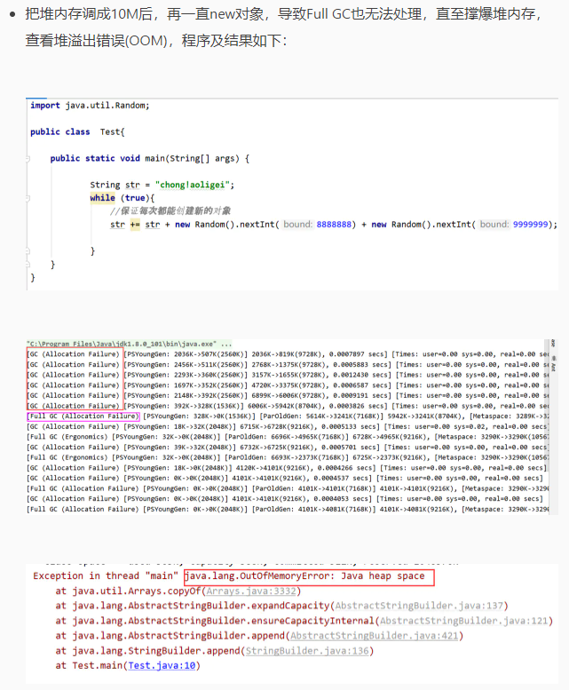
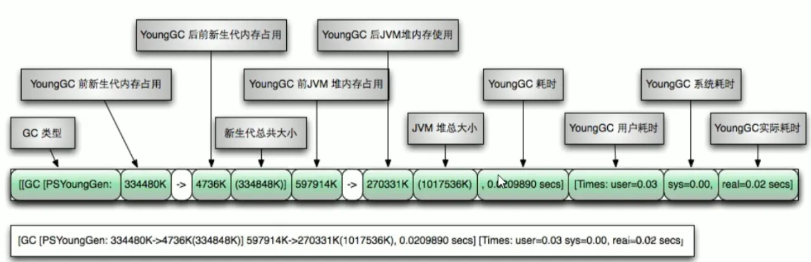

# JVM 体系结构概览
# 类装载器
注意：
- 方法区并不是存放方法的区域，其是存放类的描述信息 (模板) 的地方
- Class loader 只是负责 class 文件的加载，相当于快递员，这个 “快递员” 并不是只有一家，Class loader 有多种
- 加载之前是 “小 class”，加载之后就变成了 “大 Class”，这是安装 java.lang.Class 模板生成了一个实例。“大 Class” 就装载在方法区，模板实例化之后就得到 n 个相同的对象
- JVM 并不是通过检查文件后缀是不是 <code>.class</code > 来判断是否需要加载的，而是通过文件开头的特定文件标志
# 类加载器种类
# 双亲委派
双亲委派机制来达到沙箱安全，避免污染到源代码。
例如我们自己创建 java.lang.String, 双亲委派机制先投递给 Bootstrap 加载如果找到了就用，找不到就往下投递，由于加载到了 String 所以不会用我们创建的，这也避免了恶意创建来破坏源代码。
# 本地接口

# PC 寄存器
# 方法区

# 栈
# 栈管运行，堆管存储
java 方法 = 栈帧
# 堆栈方法去的交互关系

# 堆
# 堆 new 对象的流程
# 对象生命周期和 GC
# 永久代 java7，元空间 java8
# 堆参数调整
// 查看自己机器上的默认堆内存和最大堆内存 | |
public class Test{ | |
public static void main(String[] args) { | |
System.out.println(Runtime.getRuntime().availableProcessors()); | |
// 返回 Java 虚拟机试图使用的最大内存量。物理内存的 1/4（-Xmx） | |
long maxMemory = Runtime.getRuntime().maxMemory() ; | |
// 返回 Java 虚拟机中的内存总量 (初始值)。物理内存的 1/64（-Xms） | |
long totalMemory = Runtime.getRuntime().totalMemory() ; | |
System.out.println("MAX_MEMORY =" + maxMemory +"(字节)、" + (maxMemory / (double)1024 / 1024) + "MB"); | |
System.out.println("DEFALUT_MEMORY = " + totalMemory + " (字节)、" + (totalMemory / (double)1024 / 1024) + "MB"); | |
} | |
} | |
/* | |
* 8 | |
MAX_MEMORY =1868038144 (字节)、1781.5MB | |
TOTAL_MEMORY = 126877696 (字节)、121.0MB | |
* */ |


# GC 收集日志信息详解
第一次进行 YGC 相关参数：
[PSYoungGen: 2008K->482K(2560K)] 2008K->782K(9728K), 0.0011440 secs] [Times: user=0.00 sys=0.00, real=0.00 secs]

最后一次进行 FGC 相关参数：
[Full GC (Allocation Failure) [PSYoungGen: 0K->0K(2048K)] [ParOldGen: 4025K->4005K(7168K)] 4025K->4005K(9216K), [Metaspace: 3289K->3289K(1056768K)], 0.0082055 secs] [Times: user=0.00 sys=0.00, real=0.01 secs]
面试题：GC 是什么（分代收集算法）
- 次数上频繁收集 Young 区
- 次数上较少收集 Old 区
- 基本不动元空间
面试题：GC 的四大算法（后有详解）
- 1. 复制算法 (Copying)
- 标记清除 (Mark-Sweep)
- 标记压缩 (Mark-Compact)
- 分代收集算法
面试题：下面程序中，有几个线程在运行
Answer: 有两个线程，一个是 main 线程，一个是后台的 gc 线程。
# 四大算法
# 引用计数法
首先看一下判断 Java 中对象存活的算法：
- 1. 引用计数算法：引用计数器算法是给每个对象设置一个计数器，当有地方引用这个对象的时候，计数器 + 1，当引用失效的时候，计数器 - 1，当计数器为 0 的时候，JVM 就认为对象不再被使用，是 “垃圾” 了。
引用计数器实现简单，效率高；但是不能解决循环引用问问题（A 对象引用 B 对象，B 对象又引用 A 对象，但是 A,B 对象已不被任何其他对象引用），同时每次计数器的增加和减少都带来了很多额外的开销，所以在 JDK1.1 之后，这个算法已经不再使用了。 - **2. 根搜索方法：** 根搜索方法是通过一些 “GCRoots” 对象作为起点，从这些节点开始往下搜索，搜索通过的路径成为引用链（ReferenceChain），当一个对象没有被 GCRoots 的引用链连接的时候，说明这个对象是不可用的。
GCRoots 对象包括：- 虚拟机栈（栈帧中的本地变量表）中的引用的对象。
2. 方法区域中的类静态属性引用的对象。
3. 方法区域中常量引用的对象。
4. 方法栈中 JNI（Native 方法）的引用的对象。
- 虚拟机栈（栈帧中的本地变量表）中的引用的对象。
# 复制算法
年轻代中使用的是 Minor GC（YGC），这种 GC 算法采用的是复制算法 (Copying)。
Minor GC 会把 Eden 中的所有活的对象都移到 Survivor 区域中，如果 Survivor 区中放不下，那么剩下的活的对象就被移到 Old generation 中，也即一旦收集后，Eden 是就变成空的了。
当对象在 Eden (包括一个 Survivor 区域，这里假设是 from 区域) 出生后，在经过一次 Minor GC 后，如果对象还存活，并且能够被另外一块 Survivor 区域所容纳 ( 上面已经假设为 from 区域，这里应为 to 区域，即 to 区域有足够的内存空间来存储 Eden 和 from 区域中存活的对象 )，则使用复制算法将这些仍然还存活的对象复制到另外一块 Survivor 区域 ( 即 to 区域 ) 中，然后清理所使用过的 Eden 以及 Survivor 区域 ( 即 from 区域 )，并且将这些对象的年龄设置为 1，以后对象在 Survivor 区每熬过一次 Minor GC，就将对象的年龄 + 1，当对象的年龄达到某个值时 ( 默认是 15 岁，通过 - XX:MaxTenuringThreshold 来设定参数)，这些对象就会成为老年代。
-XX:MaxTenuringThreshold — 设置对象在新生代中存活的次数

年轻代中的 GC, 主要是复制算法（Copying）。 HotSpot JVM 把年轻代分为了三部分：1 个 Eden 区和 2 个 Survivor 区（分别叫 from 和 to）。默认比例为 8:1:1, 一般情况下，新创建的对象都会被分配到 Eden 区 (一些大对象特殊处理), 这些对象经过第一次 Minor GC 后，如果仍然存活，将会被移到 Survivor 区。对象在 Survivor 区中每熬过一次 Minor GC，年龄就会增加 1 岁，当它的年龄增加到一定程度时，就会被移动到年老代中。因为年轻代中的对象基本都是朝生夕死的 (90% 以上)，所以在年轻代的垃圾回收算法使用的是复制算法，复制算法的基本思想就是将内存分为两块，每次只用其中一块 (from)，当这一块内存用完，就将还活着的对象复制到另外一块上面。复制算法的优点是不会产生内存碎片，缺点是耗费空间。
在 GC 开始的时候，对象只会存在于 Eden 区和名为 “From” 的 Survivor 区，Survivor 区 “To” 是空的。紧接着进行 GC，Eden 区中所有存活的对象都会被复制到 “To”，而在 “From” 区中，仍存活的对象会根据他们的年龄值来决定去向。年龄达到一定值 (年龄阈值，可以通过 - XX:MaxTenuringThreshold 来设置) 的对象会被移动到年老代中，没有达到阈值的对象会被复制到 “To” 区域。经过这次 GC 后，Eden 区和 From 区已经被清空。这个时候，“From” 和 “To” 会交换他们的角色，也就是新的 “To” 就是上次 GC 前的 “From”，新的 “From” 就是上次 GC 前的 “To”。不管怎样，都会保证名为 To 的 Survivor 区域是空的。Minor GC 会一直重复这样的过程，直到 “To” 区被填满，“To” 区被填满之后，会将所有对象移动到年老代中。
因为 Eden 区对象一般存活率较低，一般的，使用两块 10% 的内存作为空闲和活动区间，而另外 80% 的内存，则是用来给新建对象分配内存的。一旦发生 GC，将 10% 的 from 活动区间与另外 80% 中存活的 eden 对象转移到 10% 的 to 空闲区间，接下来，将之前 90% 的内存全部释放，以此类推。

上面动画中，Area 空闲代表 to，Area 激活代表 from，绿色代表不被回收的，红色代表被回收的。
复制算法它的缺点也是相当明显的:
- 它浪费了一半的内存，这太要命了。
- 如果对象的存活率很高，我们可以极端一点，假设是 100% 存活，那么我们需要将所有对象都复制一遍，并将所有引用地址重置一遍。复制这一工作所花费的时间，在对象存活率达到一定程度时，将会变的不可忽视。 所以从以上描述不难看出，复制算法要想使用，最起码对象的存活率要非常低才行，而且最重要的是，我们必须要克服 50% 内存的浪费。
# 标记清除
复制算法的缺点就是费空间，其是用在年轻代的，老年代一般是由标记清除或者是标记清除与标记整理的混合实现。
用通俗的话解释一下标记清除算法，就是当程序运行期间，若可以使用的内存被耗尽的时候，GC 线程就会被触发并将程序暂停，随后将要回收的对象标记一遍，最终统一回收这些对象，完成标记清理工作接下来便让应用程序恢复运行。
主要进行两项工作，第一项则是标记，第二项则是清除。
- 标记：从引用根节点开始标记遍历所有的 GC Roots， 先标记出要回收的对象。
- 清除：遍历整个堆，把标记的对象清除。

标记清除算法小结：
- 1、首先，它的缺点就是效率比较低（递归与全堆对象遍历），而且在进行 GC 的时候，需要停止应用程序，这会导致用户体验非常差劲
- 2、其次，主要的缺点则是这种方式清理出来的空闲内存是不连续的，这点不难理解，我们的死亡对象都是随即的出现在内存的各个角落的，现在把它们清除之后，内存的布局自然会乱七八糟。而为了应付这一点，JVM 就不得不维持一个内存的空闲列表，这又是一种开销。而且在分配数组对象的时候，寻找连续的内存空间会不太好找。
# 标记压缩
标记压缩 (Mark-Compact) 又叫标记清除压缩 (Mark-Sweep-Compact)，或者标记清除整理算法。老年代一般是由标记清除或者是标记清除与标记整理的混合实现

# 分代收集算法
当前商业虚拟机都是采用分代收集算法，它根据对象存活周期的不同将内存划分为几块，一般是把 Java 堆分为新生代和老年代，然后根据各个年代的特点采用最适当的收集算法，在新生代中，每次垃圾收集都发现有大批对象死去，只有少量存活，就选用复制算法，而老年代因为对象存活率高，没有额外空间对它进行分配担保，就必须使用 “标记清理” 或者 “标记整理” 算法来进行回收。
图的左半部分是未回收前的内存区域，右半部分是回收后的内存区域。
面试题：四种算法那个好
Answer：没有那个算法是能一次性解决所有问题的，因为 JVM 垃圾回收使用的是分代收集算法，没有最好的算法，只有根据每一代他的垃圾回收的特性用对应的算法。** 新生代使用复制算法，老年代使用标记清除和标记整理算法。** 没有最好的垃圾回收机制，只有最合适的。
面试题：请说出各个垃圾回收算法的优缺点
- ** 内存效率：** 复制算法 > 标记清除算法 > 标记整理算法（此处的效率只是简单的对比时间复杂度，实际情况不一定如此）。
- ** 内存整齐度：** 复制算法 = 标记整理算法 > 标记清除算法。
- ** 内存利用率：** 标记整理算法 = 标记清除算法 > 复制算法。
可以看出，效率上来说，复制算法是当之无愧的老大，但是却浪费了太多内存，而为了尽量兼顾上面所提到的三个指标，标记 / 整理算法相对来说更平滑一些，但效率上依然不尽如人意，它比复制算法多了一个标记的阶段，又比标记 / 清除多了一个整理内存的过程
难道就没有一种最优算法吗？Java 9 之后出现了 G1 垃圾回收器（使用分代收集），能够解决以上问题，有兴趣参考这篇文章。
# 总结：
# 年轻代 (Young Gen)
年轻代特点是区域相对老年代较小，对像存活率低。
这种情况复制算法的回收整理，速度是最快的。复制算法的效率只和当前存活对像大小有关，因而很适用于年轻代的回收。而复制算法内存利用率不高的问题，通过 hotspot 中的两个 survivor 的设计得到缓解。
# 老年代 (Tenure Gen)
老年代的特点是区域较大，对像存活率高。
这种情况，存在大量存活率高的对像，复制算法明显变得不合适。一般是由标记清除或者是标记清除与标记整理的混合实现。
Mark 阶段的开销与存活对像的数量成正比，这点上说来，对于老年代，标记清除或者标记整理有一些不符，但可以通过多核 / 线程利用，对并发、并行的形式提标记效率。
Sweep 阶段的开销与所管理区域的大小形正相关，但 Sweep “就地处决” 的特点，回收的过程没有对像的移动。使其相对其它有对像移动步骤的回收算法，仍然是效率最好的。但是需要解决内存碎片问题。
Compact 阶段的开销与存活对像的数据成开比，如上一条所描述，对于大量对像的移动是很大开销的，做为老年代的第一选择并不合适。
基于上面的考虑，老年代一般是由标记清除或者是标记清除与标记整理的混合实现。以 hotspot 中的 CMS 回收器为例，CMS 是基于 Mark-Sweep 实现的，对于对像的回收效率很高，而对于碎片问题，CMS 采用基于 Mark-Compact 算法的 Serial Old 回收器做为补偿措施：当内存回收不佳（碎片导致的 Concurrent Mode Failure 时），将采用 Serial Old 执行 Full GC 以达到对老年代内存的整理。
# jmm
如果加了 volatile 就可以通知 main 线程中的 while，判断 number 已经被修改了跳出循环
静态代码块先于构造块加载，静态代码块只加载一次，构造块先于构造方法先加载
# 脑图